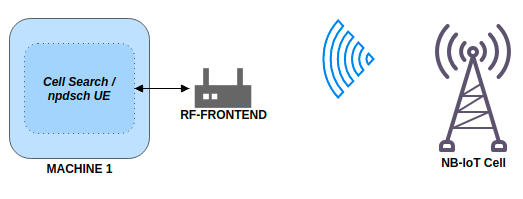
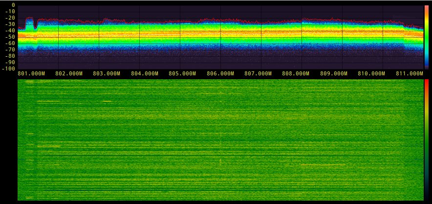

NB-IoT 信令
简介
窄带物联网 (NB-IoT) 是其他低功耗广域网 (LPWAN) 技术的 3GPP 替代方案， 例如 SigFox 和 LoRa。从技术上讲，它采用了类似的想法，并重用了 LTE 的一些组件。 但带宽显着降低至单个 PRB (180 kHz)，以实现低复杂度、低成本、 电池寿命长的要求。它在第 13 版中首次标准化。
本应用说明的第一部分介绍了如何发现和解码商业 NB-IoT 传输。 第二部分展示如何发送和接收您自己的 NB-IoT 下行链路信号。
要求
NB-IoT 示例需要能够以 1.92 Msps 采样的无线电。 由于 NB-IoT 运营商的带宽非常小，即使是非常便宜的设备 足以接收和解码信号。例如，流行的 RTL-SDR USB 适配器 大约 15-20 欧元的价格足以解码信号。
eNB 发射器示例需要具有发射功能的无线电。 例如，Ettus B200mini 可用作 eNB 发射器，RTL-SDR 可用作 UE 接收器。 原则上，UHD 或 SoapySDR 支持的任何设备都应该可以工作。
以下应用程序也支持 GUI 用于数据的实时可视化。
此处使用的所有示例都可以在以下目录中找到： `./srsRAN/build/lib/examples`
发现本地 NB-IoT 部署
{kind=link}

执行小区搜索和解码传输所需的基本系统架构。
大多数 NB-IoT 部署都可以在 sub-GHz 频段中找到。在欧洲，尤其是频段 20（下行链路 791-821 MHz）。 要在频段 20 上运行 NB-IoT 小区搜索，只需运行：
$ ./lib/examples/cell_search_nbiot -b 20
Opening RF device...
[INFO] [UHD] linux; GNU C++ version 8.3.0; Boost_106700; UHD_3.13.1.0-3build1
[INFO] [LOGGING] Fastpath logging disabled at runtime.
Opening USRP channels=1, args: type=b200,master_clock_rate=23.04e6
[INFO] [B200] Detected Device: B200mini
[INFO] [B200] Operating over USB 3.
[INFO] [B200] Initialize CODEC control...
[INFO] [B200] Initialize Radio control...
[INFO] [B200] Performing register loopback test...
[INFO] [B200] Register loopback test passed
[INFO] [B200] Asking for clock rate 23.040000 MHz...
[INFO] [B200] Actually got clock rate 23.040000 MHz.
[ 0/299]: EARFCN 6150, 791.00 MHz looking for NPSS.
[ 1/299]: EARFCN 6151, 791.10 MHz looking for NPSS.
[ 2/299]: EARFCN 6152, 791.20 MHz looking for NPSS.
...
[105/299]: EARFCN 6253, 801.30 MHz looking for NPSS.
NSSS with peak=95.885849, cell-id: 257, partial SFN: 0
Found CELL ID 257.
...
[295/299]: EARFCN 6445, 820.50 MHz looking for NPSS.
[296/299]: EARFCN 6446, 820.60 MHz looking for NPSS.
[297/299]: EARFCN 6447, 820.70 MHz looking for NPSS.
[298/299]: EARFCN 6448, 820.80 MHz looking for NPSS.
Found 1 cells
Found CELL 801.3 MHz, EARFCN=6253, PHYID=257, NPSS power=31.0 dBm
Bye
在此示例中，我们找到了 801.3 MHz 的 NB-IoT 载波。我们现在可以使用 npdsch_ue 示例（参见下一节） 对传输进行解码。
也可以只查看频谱并检查那里是否有 NB-IoT 运营商。 大多数时候，载体清晰可见，在大多数情况下它接近 LTE 载体 通常甚至比 LTE 信号本身还要强一些。
下面的示例显示了 806 MHz 的 10 MHz 下行链路 LTE 信号。人们可以在以下位置找到 NB-IoT 运营商： LTE 频谱的左侧（保护带）。

下表显示了欧洲已知的 NB-IoT 部署的一些示例。
国家 |
操作员 |
EARFC网络 |
频率（兆赫） |
|---|---|---|---|
西班牙 |
沃达丰 |
6253 |
801.3 |
西班牙 |
西班牙电信 |
6354 |
811.4 |
西班牙 |
橙色 |
6153 |
791.3 |
德国 |
沃达丰 |
6346 |
810.6 |
爱尔兰 |
沃达丰 |
6354 |
811.4 |
解码 NB-IoT 传输
一旦我们找到了 NB-IoT 载波的下行频率，我们就可以使用 npdsch_ue 例如 解码信号。应用程序应在运营商上同步，检测小区 ID 并开始 解码 MIB、SIB 和 SIB2。
$ ./lib/examples/npdsch_ue -f 801.3e6
Opening RF device...
Soapy has found device #0: driver=rtlsdr, label=Generic RTL2832U OEM :: 00000001, manufacturer=Realtek, product=RTL2838UHIDIR, serial=00000001, tuner=Rafael Micro R820T,
Selecting Soapy device: 0
..
Set RX freq: 801.300000 MHz
Setting sampling rate 1.92 MHz
NSSS with peak=65.811836, cell-id: 257, partial SFN: 0
*Found n_id_ncell: 257 DetectRatio= 0% PSR=10.57, Power=111.7 dBm
MIB received (CFO: -2,82 kHz) FrameCnt: 0, State: 10
SIB1 received
SIB2 received
CFO: -2,76 kHz, RSRP: 28,0 dBm SNR: 5,0 dB, RSRQ: -11,5 dB, NPDCCH detected: 0, NPDSCH-BLER: 0,00% (0 of total 2), NPDSCH-Rate: 0,10
..
如果您编译了带有 GUI 支持的 srsRAN，您应该在屏幕上看到类似的内容。

您可以使用 Ctrl+C 停止 UE 解码器。退出后，应用程序会写入解码后的 PCAP 文件 发信号给 /tmp/npdsch.pcap。可以使用 Wireshark 检查该文件。下面的截图显示 Wireshark 对接收到的信号进行解码。

发送和接收下行信号

发送和接收下行链路信号所需的基本系统架构。
在本教程的这一部分中，我们将展示如何使用提供的示例应用程序来 传输和接收我们自己的 NB-IoT 信号。请注意，您应该只在 电缆设置或法拉第笼，以符合您所在国家/地区的排放规则。
请检查您使用的RF前端硬件是否符合 要求 之前概述过。
要启动 eNB 示例，只需执行以下命令即可。这将启动 eNB 默认情况下，选择第一个可用的 RF 设备并传输信号。随着 -o 选项 信号也可以写入文件以进行离线处理。
$ ./lib/examples/npdsch_enodeb -f 868e6
Opening RF device...
[INFO] [UHD] linux; GNU C++ version 8.3.0; Boost_106700; UHD_3.13.1.0-3build1
[INFO] [LOGGING] Fastpath logging disabled at runtime.
[INFO] [B200] Loading firmware image: /usr/share/uhd/images/usrp_b200_fw.hex...
Opening USRP channels=1, args: type=b200,master_clock_rate=23.04e6
[INFO] [B200] Detected Device: B200mini
[INFO] [B200] Loading FPGA image: /usr/share/uhd/images/usrp_b200mini_fpga.bin...
[INFO] [B200] Operating over USB 3.
[INFO] [B200] Initialize CODEC control...
[INFO] [B200] Initialize Radio control...
[INFO] [B200] Performing register loopback test...
[INFO] [B200] Register loopback test passed
[INFO] [B200] Asking for clock rate 23.040000 MHz...
[INFO] [B200] Actually got clock rate 23.040000 MHz.
Setting sampling rate 1.92 MHz
Set TX gain: 70.0 dB
Set TX freq: 868.00 MHz
NB-IoT DL DCI:
- Format flag: 1
+ FormatN1 DCI: Downlink
- PDCCH Order: 0
- Scheduling delay: 0 (0 subframes)
- Resource assignment: 0
+ Number of subframes: 1
- Modulation and coding scheme index: 1
- Repetition number: 0
+ Number of repetitions: 1
- New data indicator: 0
- HARQ-ACK resource: 1
- DCI subframe repetition number: 0
DL grant config:
- Number of subframes: 1
- Number of repetitions: 1
- Total number of subframes: 1
- Starting SFN: 0
- Starting SF index: 6
- Modulation type: QPSK
- Transport block size: 24
eNB 示例将使用 MIB-NB 和 SIB1-NB 传输符合标准的下行链路信号。 但它不传输 SIB2。在不用于 MIB 或 SIB 传输的所有空下行链路子帧中 它确实会出于测试目的向 RNTI 0x1234 发送 NPDSCH 信号。可以修改 通过在 eNB 控制台上键入 MCS 值（例如 20）来确定测试传输的传输块大小 并按 Enter 键。
该测试传输可以使用 UE 示例进行解码。为此，我们需要运行 UE 示例，告诉它解码 RNTI 0x1234 并跳过 SIB2 解码（因为它不是由 eNB 传输）：
$ ./lib/examples/npdsch_ue -f 868e6 -r 0x1234 -s
Opening RF device...
Found Rafael Micro R820T tuner
Soapy has found device #0: driver=rtlsdr, label=Generic RTL2832U OEM :: 00000001, manufacturer=Realtek, product=RTL2838UHIDIR, serial=00000001, tuner=Rafael Micro R820T,
Selecting Soapy device: 0
[INFO] Opening Generic RTL2832U OEM :: 00000001...
Found Rafael Micro R820T tuner
Setting up Rx stream with 1 channel(s)
[INFO] Using format CF32.
[R82XX] PLL not locked!
Available device sensors:
Available sensors for Rx channel 0:
State of gain elements for Rx channel 0 (AGC supported):
- TUNER: 0.00 dB
State of gain elements for Tx channel 0 (AGC supported):
- TUNER: 0.00 dB
Rx antenna set to RX
Tx antenna set to RX
Set RX gain: 40.0 dB
Set RX freq: 868.000000 MHz
Setting sampling rate 1.92 MHz
NSSS with peak=24.363365, cell-id: 0, partial SFN: 0
*Found n_id_ncell: 0 DetectRatio= 0% PSR=8.66, Power=86.4 dBm
MIB received (CFO: -1,55 kHz) FrameCnt: 0, State: 10
SIB1 received
CFO: -1,41 kHz, RSRP: 12,0 dBm SNR: 19,0 dB, RSRQ: -3,7 dB, NPDCCH detected: 510, NPDSCH-BLER: 0,20% (1 of total 511), NPDSCH-Rate: 10,36 kbit/s
除了没有解码 SIB2 之外，外观应该类似。如果您已使用 GUI 支持进行编译 您应该再次看到类似上面的应用程序。请注意星座 图更新得更频繁，因为现在所有 NPDSCH 传输都要进行测试 用户也收到了。
已知问题
细胞 ID 检测并不可靠。
在某些情况下，使用 NSSS 信号进行小区 ID 检测无法可靠地工作。如果 npdsch_ue 应用 明显与下行链路信号同步（您可以在 GUI 的中间图表中看到强相关峰值），但 MIB 从未被解码，很可能没有正确检测到小区 ID。在这种情况下，请尝试重新启动应用程序 再次查看是否可以检测到小区ID。如果问题仍然存在，还可以尝试设置 手动使用小区 ID -l 参数。为此，您需要首先找出正确的值，有时这 可以通过解码默认的 LTE 载波来完成 pdsch_ue 并为 NB-IoT 运营商使用相同的小区 ID。